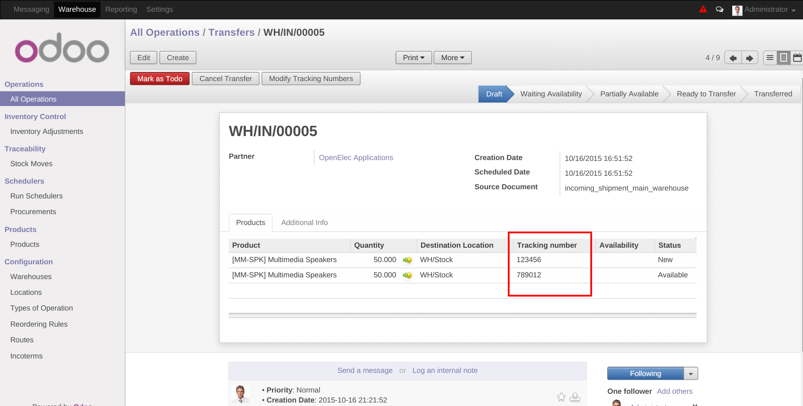
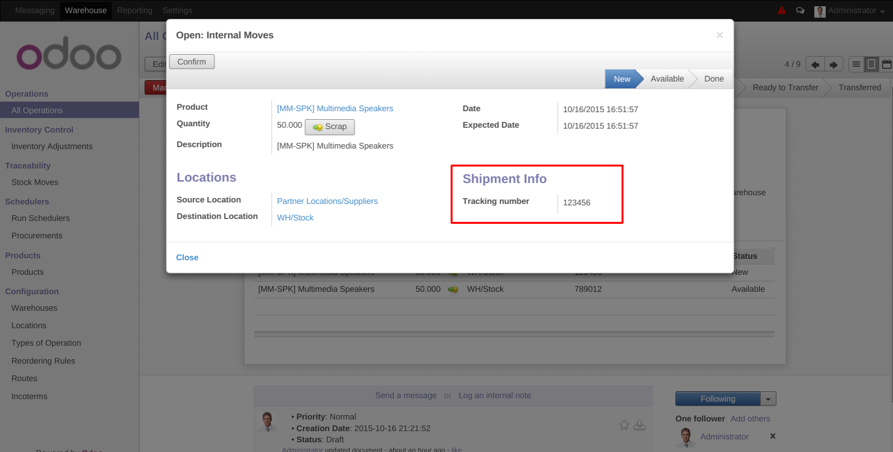

This module will let you to manage a
Tracking Number
in the move record,
this way will be easy for you to organize the stock inventory.
To install this module, you need to:
Settings > Module list
search for the current name and click in
Install
button.
To configure this module, you need to:
Tracking Number
Add new field
Tracking Number
to the stock move model and visible form the
stock moves views and picking views with move lines listed. This new field can
be set manually for every move or can use a wizard to update the tracking
number to a group of moves. The tracking number field can only be updated if
the move is not in state
done
.
Batch Modify Tracking Numbers
Add a button to the picking form view named
Modify Tracking Numbers
that
give the user the opportunity to modify tracking numbers in batch mode for all
or a subgroups of the current picking moves.
After click the button
Modify Tracking Numbers
the wizard will open and
you should enter the new Tracking Number and select the move lines were this
new tracking number will be applied. If you want to exclude one of the line
you just need to click on the garbage icon over that move line. This will not
delete the move line, will only indicate that the new tracking number will not
be applied to that line.
Modifed Views
Below are screenshots of the modified stock move and stock picking views:
Move Tree view visible from the
Warehouse > Traceability > Stock Move
menu. The
Tracking number
column is shown and you can make a search by
Tracking Number directly or also you can Group by Tracking Number.
Move Form view visible from the
Warehouse > Traceability > Stock Move
after select one of the moves from the list view. A new section named
Shipment Info
was added.
Move Lines in Picking Form view also show the tracking number for every move in the picking. You can edit the picking and change every move tracking number from this view.
If you click over the move line in the picking form view you can open the move form. In this view also you can view the tracking number in the same format it was added to the stock move regular form view.
Bugs are tracked on GitHub Issues . In case of trouble, please check there if your issue has already been reported. If you spotted it first, help us smashing it by providing a detailed and welcomed feedback here
Constributors